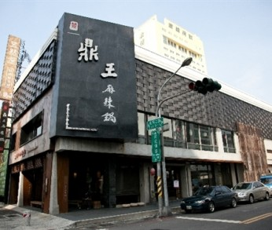

 鼎王麻辣鍋 民國八十年，鼎王麻辣鍋創始店， 在美味齊聚、熱鬧擁擠的台中市忠孝夜市設立。 在當時，麻辣鍋專賣仍屬創舉，要在各式小吃環伺的忠孝夜市中， 贏得饕客的鍾愛，必須有其獨到之處， 在創辦人陳世明先生以其多年廚師經驗及用心的耕耘下， 很快就掌握了顧客挑剔的味蕾，研發出獨步全台麻辣湯頭， 從最初的小吃店， 歷經不同階段的轉型蛻變， 打造融合中式傳統藝術與現代美學的餐飲空間設計， 並首創服務人員鞠躬禮儀。
在美味齊聚、熱鬧擁擠的台中市忠孝夜市設立。
在當時，麻辣鍋專賣仍屬創舉，要在各式小吃環伺的忠孝夜市中，
贏得饕客的鍾愛，必須有其獨到之處，
在創辦人陳世明先生以其多年廚師經驗及用心的耕耘下，
很快就掌握了顧客挑剔的味蕾，研發出獨步全台麻辣湯頭，
從最初的小吃店，
歷經不同階段的轉型蛻變，
打造融合中式傳統藝術與現代美學的餐飲空間設計， 並首創服務人員鞠躬禮儀。